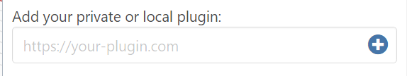

Using FormIt Plugins
FormIt plugins are easy to use, manage, and build. Use the Plugin Manager to install useful plugins from the FormIt Team, or learn how to build your own FormIt plugins!
The FormIt Plugin Manager
The FormIt Plugin Manager is your one-stop shop for discovering and managing plugins.
The Plugin Manager is loaded automatically when FormIt starts, as long as FormIt has access to the internet.
Access it by clicking its tab icon on the right side of the app:


The Plugin Manager categorizes different types of plugins:
- Installed plugins
- Recommended plugins
- Plugins that the FormIt team recommends to expand FormIt's core functionality and unlock new workflows.
- Community-developed plugins will appear here after being approved by the FormIt team. More details to come on this in the future.
- Public plugins
- Plugins built by the community, but which have not been reviewed or approved by the FormIt team.
The Plugin Manager is designed using a series of expandable and collapsible interfaces, which makes managing plugins and their repositories easy:
- Managing Plugins:
- Click on a plugin name to see its description.
- Toggle the switch to install or uninstall it.
- The plugin will manifest as a toolbar at the top of the application, a panel on the right side, or a dialog in the middle, depending on the plugin type.
- If you're developing your own plugin, you can add its private URL into the field at the bottom and hit (+): 
How Plugins Work
- Plugins are web-based, and available in FormIt for Windows and FormIt for Web.
- Plugins are comprised of a series of files and folders hosted on GitHub, or on a local server when building your own.
- External plugins (plugins not hosted locally) require an internet connection to initially load, which means:
- External plugins will not load if no internet connection is detected when FormIt starts.
- Once loaded, some external plugins can continue to work in offline mode for that session, but others might break until connectivity is restored.
- External plugins load the latest code on the server at every run, so their functionality will update whenever the author pushes a change.
- Plugins are loaded asynchronously, which means the order of the plugins in the FormIt interface may change with each new session.
- The Plugin Manager uses registry keys on Windows to store your installed repositories and plugins.
- If you need to reset your Plugin Manager to its defaults, delete the following registry key:
- Computer\HKEY_CURRENT_USER\Software\Autodesk\FormIt 360\Plugins
- Note this will uninstall all user-added repos and plugins, resetting the Plugin Manager to include only the built-in repos and plugins.